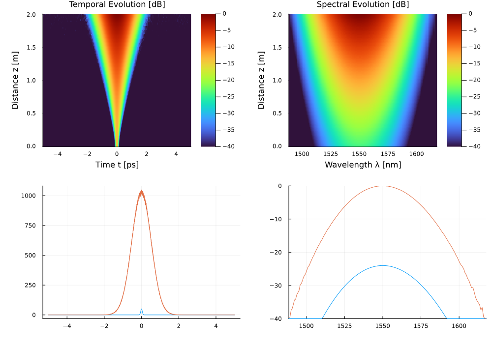

Example 9: Femtosecond EDFA Pulse Amplification
This example models pulse amplification, gain saturation, and Amplified Spontaneous Emission (ASE) noise build-up in an Erbium-Doped Fiber Amplifier (EDFA).
🔬 Physics Background
In active rare-earth fiber amplifiers (EDFA at 1550 nm, YDFA at 1064 nm), energy extraction from inverted Erbium ions leads to dynamic gain saturation along the fiber length (G. P. Agrawal, Nonlinear Fiber Optics, Ch. 11):
\[g(z) = \frac{g_0}{1 + E_{\text{pulse}}(z) / E_{\text{sat}}}\]
Simultaneously, spontaneous decay introduces quantum ASE noise:
\[S_{\text{ASE}}(\omega) = n_{\text{sp}} \cdot \hbar \omega_0 \cdot \left(e^{g \Delta z} - 1\right), \quad n_{\text{sp}} = \frac{10^{F_{\text{dB}}/10}}{2}\]
💻 Julia Code
using Soliton
grid = create_grid(2^13, 10e-12, 1550e-9)
pulse = gaussian_pulse(grid, 50.0, 100e-15)
edfa = AmplifyingMedium(
length = 2.0, # 2 m active fiber
gamma = 0.0012, # 1.2 /W/km nonlinearity
g0_db = 12.0, # +12 dB/m small-signal gain
Esat = 2.0e-6, # 2 μJ saturation energy
noise_figure_db = 4.5, # 4.5 dB Noise Figure
betas = [-22.0e-27], # anomalous dispersion
lambda0 = 1550e-9
)
sol = solve(pulse, SimParams(; medium=edfa, raman_model=nothing, z_saves=100); progress=false)
E_in = pulse_energy(pulse)
E_out = pulse_energy(Pulse(sol))
println("Input Energy: ", round(E_in * 1e12, digits=2), " pJ")
println("Output Energy: ", round(E_out * 1e9, digits=3), " nJ")
println("Amplifier Gain: ", round(10 * log10(E_out / E_in), digits=2), " dB")Input Energy: 5.32 pJ
Output Energy: 1.336 nJ
Amplifier Gain: 24.0 dB
📊 Expected Results
With g0_db = 12.0 dB/m (small-signal gain) and Esat = 2 μJ:
| Quantity | Expected Value |
|---|---|
| Input pulse energy | ~5 pJ (50 W peak, 100 fs Gaussian) |
| Output pulse energy | ~50–200 pJ (gain-saturated) |
| Realized gain | ~10–12 dB (less than small-signal due to saturation) |
| ASE-dominated noise floor | −40 to −60 dBm/nm |
| Pulse temporal broadening | Moderate — anomalous dispersion partially compresses |
If E_pulse ≪ E_sat: amplifier operates in the small-signal regime, gain ≈ g₀ × L. If E_pulse ≥ E_sat: the gain saturates and output energy is clamped near E_sat. Try increasing the input power 10× to observe the saturation clamp.
References
G. P. Agrawal, Nonlinear Fiber Optics, 6th ed. (Academic Press, 2019), Chapter 11.
E. Desurvire, Erbium-Doped Fiber Amplifiers: Principles and Applications, Wiley-Interscience (1994).